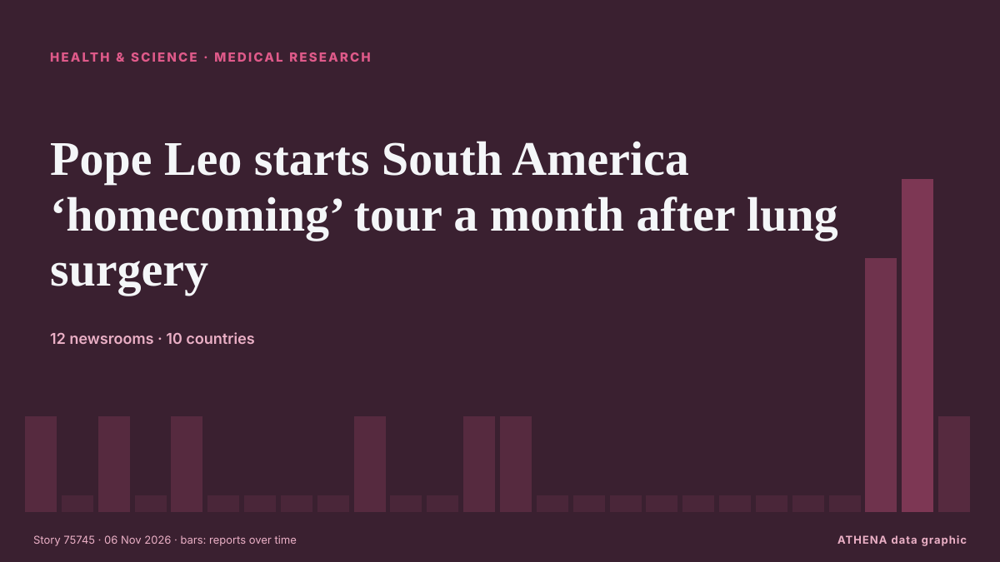

Health, Science & Research
SponsoredPresented by  Cybernetics and Artificial Intelligence Lab Welcome to the Cybernetics and Artificial Intelligence Laboratory, established at the Department of Business Administration of the National and Kapodistrian University of Athens. The lab is headed by Professor Dimitrios Thomakos. The lab aims to do research that can be published in top venues. Our research uses tools and methods of Artificial Intelligence, and lies in the following areas: - Forecasting - Decision making - Cyber security - Finance We are always looking forward to collaborating with exceptional students!
Cybernetics and Artificial Intelligence Lab Welcome to the Cybernetics and Artificial Intelligence Laboratory, established at the Department of Business Administration of the National and Kapodistrian University of Athens. The lab is headed by Professor Dimitrios Thomakos. The lab aims to do research that can be published in top venues. Our research uses tools and methods of Artificial Intelligence, and lies in the following areas: - Forecasting - Decision making - Cyber security - Finance We are always looking forward to collaborating with exceptional students!

Medical researchPope Leo starts South America ‘homecoming’ tour a month after lung surgery
ABOARD THE PAPAL FLIGHT, Nov 6 - Pope Leo left on Friday for an ambitious 12-day trip across South America expected to attract millions-strong crowds, as the first US-born pope returns to a Catholic… from The Straits Times
| 24 Oct | 36 |
|---|---|
| 25 Oct | 45 |
| 26 Oct | 83 |
| 27 Oct | 80 |
| 28 Oct | 79 |
| 29 Oct | 90 |
| 30 Oct | 83 |
| 31 Oct | 46 |
| 1 Nov | 34 |
| 2 Nov | 103 |
| 3 Nov | 71 |
| 4 Nov | 92 |
| 5 Nov | 58 |
| 6 Nov | 24 |
China's space station sets new atomic cooling record
Chinese scientists have cooled a cloud of rubidium atoms aboard China's space station to an equivalent temperature of 9.7 trillionths of a degree above absolute zero, a record low according to the… from CGTN (China)
Unions call off 48-hour state hospital strike after draft pay deal
Six unions on Friday suspended a 48-hour strike at state hospitals planned for November 10 and 11, after the board of the state health services organisation (Okypy) approved a draft renewal of their… from Cyprus Mail
Researchers Find Residential Proxies on White House Network
In a month, 28 residential proxy services used 6 addresses, mainly between 5 p.m. and midnight, Eastern Time. from SecurityWeek
Guinea Bissau: Guinea-Bissau Cancels Controversial US-Funded Hepatitis B Vaccine Trial on Newborns
[allAfrica] Guinea-Bissau has cancelled a proposed hepatitis B vaccine trial on newborn babies following international criticism that it was unethical and potentially exploitative. from AllAfrica
Hundreds of Ice Age rock art engravings discovered hidden in plain sight
Archaeologists have discovered the third-largest assemblage of Ice Age cave art ever found in Mediterranean Iberia in a region thought devoid of cave art, transforming our knowledge of Paleolithic… from Phys.org
Democratic victories bring historic breakthroughs for women and minorities
CHICAGO: Voters across the US elected a historic slate of women, candidates of color and other underrepresented politicians on Tuesday, reshaping the face of political leadership as Democrats rode a… from Business Recorder
NASA's Swift space telescope plunges to Earth after 22 years in orbit
One of NASA's premier space telescopes plunged to Earth on Wednesday, ending its 22-year investigation of gamma ray bursts and exploding stars. from CBC News (alternative feed)
Scientists find signs of red blood cells and collagen in dinosaur fossils
Palaeontologists found fossilised signs of dinosaur blood and collagen in a 115-million-year-old dinosaur bone. from Times of India
Ancient coins suggest influential Iron Age king was female
Bournemouth University (BU) archaeological research has revealed that Iron Age British ruler "Verica," who was central to the Roman invasion of Britain in A.D. from Phys.org
Ancient DNA charts spread of Celtic and Germanic languages
Hundreds of millions of people today speak Germanic languages: English, Dutch, German, Danish, Swedish, etc.... from ScienceAlert
Washington state resident dies from bird flu following exposure to infected cattle
A person in Washington state has died from complications of the bird flu, the first such U.S. death in a year. from STAT News
British man infected with Ebola to be flown to UK for treatment
It is believed he is a healthcare worker who tested positive amid the outbreak in the Democratic Republic of the Congo. from Evening Standard (London)
British doctor infected with Ebola in Congo being treated in London hospital
The medical doctor was brought to the UK on a medical evacuation flight. from The Irish News (Belfast)
Manchester Christmas Markets 2026 opening and closing times as thousands set to descend on city centre
Here's what you need to know if you're visiting Manchester's Christmas markets. from Manchester Evening News
The ‘aggressive’ cancer battle behind son of a Bronco’s mission to be Wallabies’ future
A future Wallabies hopeful has endured more than most by his age. from Sydney Morning Herald
WHO approves clinical trials for two new Ebola vaccines
The World Health Organization has approved clinical trials for two new Ebola vaccines, as doctors fight to control an outbreak in Africa that has killed more than 5,300 people. from RTÉ News
Thailand fossil teeth reveal prehistoric 'giant rat' weighing 30kg
BANGKOK: A giant rodent weighing around 30 kilogrammes roamed what is now southern Thailand 33 to 35 million years ago, scientists said, after identifying a previously unknown species from two… from New Straits Times
Three injured in violence at Athens university campus
Nov 4 - A group of people, some wearing helmets, attacked a student assembly at the University of Athens campus on Wednesday, injuring three people, Greece's medical emergency service and the… from The Straits Times
U.S. Will Drop Smuggling Charges Against Russian-Born Harvard Medical School Scientist
Prosecutors dropped the charges after a federal judge cleared the way for Kseniia Petrova to obtain evidence supporting her claim that she was being vindictively prosecuted. from The Moscow Times
38 Uzbek universities make QS Asia Rankings 2027
38 universities in Uzbekistan have been included in the QS World University Rankings: Asia 2027, with 19 making it into the top 1,000. from Kun.uz (English)
Anthrax Outbreak Kills Dozens of Hippos in DR Congo
Deadly bacterial disease confirmed in Virunga National Park as authorities warn of potential risks to nearby communities and wildlife. from News of Bahrain
Ex-Prince Andrew called to testify in civil case, 1st royal in 156 years to get witness summons
The former Prince Andrew has been called to testify as a witness in a civil fraud trial, marking what is believed to be the first time in more than 150 years that a member of the royal family has… from The Canadian Press (via CityNews)
COVID class action certified over alleged negligence at Toronto long-term care home
Lawsuit alleges Downsview and Gem were grossly negligent in their response to the pandemic, resulting in multiple outbreaks at the home. from The Globe and Mail
Uneven and Fragile Progress Against Neglected Tropical Diseases – New WHO Report
While substantial progress has been made in driving down the global burden of neglected tropical diseases (NTDs), trends are “uneven and fragile”, and several diseases are off course to meet 2030… from Health Policy Watch
EFF member killed outside voting station
An EFF member was fatally stabbed outside a voting station in Polokwane on Thursday morning. from SABC News
Australia plans A$28m barriers to stop invasive cane toads spreading
A new project involving Curtin University and Rio Tinto seeks to establish a waterless barrier for cane toads. from Times of India
BBC expert says new NHS blood test that detects cancer early could be 'game changer'
More than 20,000 NHS patients are set to take part in the world-first cancer blood test trial. from WalesOnline
‘Zeptoverse’: CERN scientists uncover evidence of extraordinarily rare particle decay
Scientists at CERN have found evidence of an extraordinarily rare particle decay using the Large Hadron Collider. from Euronews English
Liverpool care boss suspended after putting terminally ill man at 'unwarranted risk of harm'
Catherine Inguyi Ngaira provided care for a man by the name of patient A in 2020 following his discharge from hospital. from Liverpool Echo
Ground cinnamon recalled in 14 states because of elevated lead levels
Why cinnamon has repeatedly been found to contain potentially dangerous amounts of lead By Mark Huffman of ConsumerAffairs November 3, 2026 SLR Food Distribution Inc. has recalled Wise Wife brand… from Consumer Affairs
Democrats take House and Senate from Republicans in US midterm rout
Democrats will control both chambers of Congress after flipping seats in Republican strongholds. from Malaysiakini
Court: DNA proof of Malaysian father not enough for citizenship bid
KUALA LUMPUR: A 20-year-old man who has lived in this country since he was three months old has failed in his bid to obtain citizenship despite DNA evidence confirming that his biological father is… from New Straits Times
Scientists Crack Secret Code of Lock From Treasure-Laden 16th-Century Shipwreck
Researchers have cracked the four-letter secret code of a 400-year-old combination lock recovered from a shipwreck off the coast of Wales. from Greek Reporter
Cardiff City 3-3 West Ham highlights
Cardiff City's injury crisis has deepened ahead of West Ham's visit, with Brian Barry-Murphy facing mounting selection headaches and fresh concerns. from WalesOnline